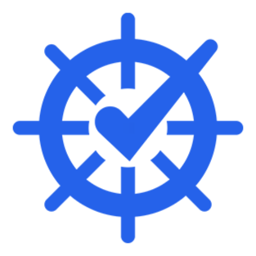

Web exam platform Plataforma web de exámenes

NauticaTestNauticaTest
Official-style nautical exam practice for PNB, PER, Patrón de Yate, and Capitán de Yate, built for quick sessions on desktop and mobile. Simulacros náuticos tipo oficial para PNB, PER, Patrón de Yate y Capitán de Yate, pensados para estudiar en escritorio y móvil.
Practice flow Flujo de estudio
A simulator for the way nautical exams are studied. Un simulador para la forma real de preparar náutica.
NauticaTest combines official-style exam sessions, topic practice, mistake review, progress stats, and chart-focused tools so students can keep a clear routine before exam day. NauticaTest combina exámenes tipo oficial, práctica por temas, repetición de fallos, estadísticas y herramientas de carta para mantener una rutina clara antes del examen.
Coverage Cobertura
Made for Spain's recreational boating licenses. Pensada para las titulaciones náuticas españolas.
The platform is organized around the titles, regions, and recurring practice patterns students actually use while preparing. La plataforma se organiza alrededor de las titulaciones, comunidades y patrones de repaso que los alumnos usan al prepararse.
Start with a real exam flow. Empieza con un flujo de examen real.
Open NauticaTest and practice from the web without waiting for an app install. Abre NauticaTest y practica desde la web sin esperar a instalar una app.